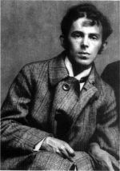

Литература серебряного века
Осип Мандельштам родился в 1891 году в Варшаве. Его отец, Эмилий Мандельштам, был купцом первой гильдии, занимался производством перчаток.
В 1911 году молодой поэт поступил на историко-филологический факультет Петербургского университета. В тот же год он присоединился к «Цеху поэтов» Николая Гумилева.
В 1913 году вышел первый сборник стихотворений молодого поэта — книга «Камень».
В 1922 году вышла вторая книга стихов Осипа Мандельштама «Tristia». В сборник вошли произведения, которые поэт написал в годы Первой мировой войны и во время революционного переворота. А еще спустя год была опубликована «Вторая книга».
В 1925-е годы Осип Мандельштам выпустил много литературоведческих статей, автобиографическую повесть «Шум времени», книгу прозы «Египетская марка», произведения для детей — «Примус», «Шары», «Два трамвая».
Осенью того же года появилось одно из самых известных сегодня стихотворений Мандельштама — «Мы живем, под собою не чуя страны…»
Впоследствие на поэта донесли и остаток жизни тот провел в лагерях.